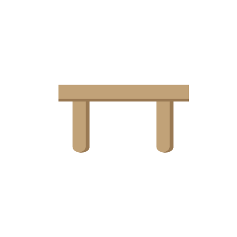

<!DOCTYPE html>
<html>
    <head>
        <meta name="viewport" content="width=device-width, initial-scale=1.0">
        <title>Word-seek v1</title>
        <script src="js/jspsych.js"></script>
        <script src="js/jspsych-html-button-response.js"></script>
        <script src="js/jspsych-audio-button-response.js"></script>
        <script src="js/jspsych-audio-keyboard-response.js"></script>
        <script src="js/jspsych-external-html.js"></script>
        <script src="js/jspsych-instructions.js"></script>
        <!-- complex-animation embeds an animated sequence of images in a scene and plays audio -->
        <script src="js/jspsych-complex-animation.js"></script>
        <script src="js/mmturkey-0.6.js"></script>
        <script src="https://ajax.googleapis.com/ajax/libs/jquery/3.2.0/jquery.min.js"></script>
        <script src="http://uniqueturker.myleott.com/lib.js" type="text/javascript"></script>
        <link href="css/jspsych.css" rel="stylesheet" type="text/css"></link>
        <link href="css/style.css" rel="stylesheet" type="text/css"></link>
        <link rel="stylesheet" href="https://www.w3schools.com/w3css/4/w3.css">
    </head>
    <body></body>
    <script>

    // Allows you to limit the number of times a single worker may work on a group of HITs,
    // defined by ut_id; see https://uniqueturker.myleott.com/ for more info
    (function(){ 
        var ut_id = "6c49f664492154d00da4f9e7fae35fa6";
        if (UTWorkerLimitReached(ut_id)) {
            document.getElementById('mturk_form').style.display = 'none';
            document.getElementsByTagName('body')[0].innerHTML = "You have already completed the maximum number of HITs allowed by this requester. Please click 'Return HIT' to avoid any impact on your approval rating.";
        }
    })();

    var timenum = Date.now();
    var turkInfo = jsPsych.turk.turkInfo();
    $.getJSON('https://json.geoiplookup.io/api?callback=?', function(data) {
      //console.log(JSON.stringify(data, null, 2));
      jsPsych.data.addProperties({ IP: data.ip, country_code: data.country_code });
    });

    // if we're not on MTurk, create a timestamp-based subject number; otherwise use turker ID
    if(turkInfo==null) {
      var subject_id = 'SS' + timenum;
    } else {
      var subject_id = 'MT-' + turkInfo.workerId;
    }

    // store subject in data on every trial
    jsPsych.data.addProperties({ subject: subject_id });

    // stop turkers from previewing the experiment
    var check_preview = function(elem) {
      if(turkInfo==null) {
        return true; // not on Mturk
      }
      if(!turkInfo.previewMode && !turkInfo.outsideTurk) {
        return true;
      } else {
        alert("You must accept the HIT to begin the experiment.");
        return false;
      }
    };

    var timeline = [];


    var ad = {
      type:'external-html',
      url: "ad.html",
      cont_btn: "start",
      check_fn: check_preview,
      force_refresh: true,
      execute_script: true
    };
    //timeline.push(ad);


     // images to preload
    var images = ['images/bag3.jpg', 'images/table.png', 'images/Bear_straight.png', "images/Bear_point_l.png", "images/Bear_point_r.png", 'images/Bear_disappear.png'];

    // novel toys
    for (var i = 0; i<18; i++) {
        images.push('images/t'+i+'.png');
    }

    var audio = ['sounds/letter.wav','sounds/bear_introduction.mp3','sounds/bosa.mp3',
        'sounds/stigson.mp3','sounds/manu.mp3','sounds/goodbye.mp3','sounds/hmm.mp3',
        'sounds/interrupted.mp3','sounds/which_bag.mp3']; // huh.mp3 or hmm2.mp3
    // re-record 'Huh' -> "Hmm, I don't know what this one is called"

     var instructions = {
        type: 'instructions',
        pages: ["<div class='w3-container' style='width: 600px; bottom-padding: 20px; text-align: left;'>" + 
                "<div style='width: 600px; margin: 0 auto; text-align: center; background-color: #8C1516; padding: 20px 15px 10px 10px'>" +
                "</div>"+
                "<center><p><strong>Stanford Language and Cognition Lab</strong></p></center>"+
                "<p>In this experiment, we're interested in how people decide what to learn. "+
                "You will see a bear introduce some new toys to you. The materials were "+
                "designed for children. Even if they seem strange at times, we ask you "+
                "to try to be as accurate as possible. You will hear sound, so please "+
                "make sure your volume is turned on. The experiment takes about 5 minutes."+
                "<p class='block-text' id='legal'>Legal information: By answering the following questions, you are participating in a study being performed by cognitive scientists in the Stanford Department of Psychology. If you have questions about this research, please contact George Kachergis at <a href='mailto://gkacherg@stanford.edu'>gkacherg@stanford.edu</a>. You must be at least 18 years old to participate. Your participation in this research is voluntary. You may decline to answer any or all of the following questions. You may decline further participation, at any time, without adverse consequences. Your anonymity is assured; the researchers who have requested your participation will not receive any personal information about you.</p></div><p />",
        "<div class='w3-container' id='stage'><p><strong>Instructions</strong></p>" +
        "<p>This bear has toys in these bags. He will tell you something about the toys,<br /> and then you can click on a bag to open it up.</p>" +
        "<p>Next we will test your audio: please make sure your sound is on.</p>" + 
        "  " +
        " " +
        //"</div>" +
        "   </div>"],
        show_clickable_nav: true,
        show_page_number: true,
        post_trial_gap: 2000
    }

    // timeline.push(consent);
    timeline.push(instructions);


    var catch_trial = {
      type: "audio-keyboard-response",
      stimulus: 'sounds/letter.wav',
      prompt: "Let's test your speakers: Please type the letter you hear.",
      choices: jsPsych.ALL_KEYS,
      data: {
        stimulus_type: 'congruent',
      },
      on_finish: function(data){
        if(data.key_press == 113 | data.key_press == 81) {// ASCII code for q or Q
          data.correct = true; // can add property correct by modify data object directly
        } else {
          data.correct = false;
          // indicate they need to return the HIT
          jsPsych.endExperiment('Incorrect response: Your speakers are not working, but are needed for this HIT. Please return the HIT. You cannot participate in this experiment. Thank you!');
        }
      }
    }
    timeline.push(catch_trial);

    function shuffle(a) {
        var j, x, i;
        for (i = a.length - 1; i > 0; i--) {
            j = Math.floor(Math.random() * (i + 1));
            x = a[i];
            a[i] = a[j];
            a[j] = x;
        }
        return a;
    }

    function saveData(name, data){
        var xhr = new XMLHttpRequest();
        xhr.open('POST', 'write_data.php'); // 'write_data.php' is the path to the php file described above.
        xhr.setRequestHeader('Content-Type', 'application/json');
        xhr.send(JSON.stringify({filename: name, filedata: data}));
    }

    var labels = ["bosa", "manu", "stigson"];
    //var audio_labels = ['sounds/bosa.mp3', 'sounds/manu.mp3', 'sounds/stigson.mp3']

    var conditions = ['unknown', 'unlabeled', 'interrupted'];
    var condition_prompts = {
        "unknown": "I don't know what this one is called.", 
        "unlabeled": "Hmm.", // "Huh"
        "interrupted": "This one is a..."
    };
    var condition_prompts_audio = {
        "unknown": "sounds/dont_know.mp3",
        "unlabeled": "sounds/hmm.mp3",
        "interrupted": "sounds/interrupted.mp3"
    };

    labels = shuffle(labels);
    conditions = shuffle(conditions);

    // ToDo: build trial for each label in a for loop
    for (var i = 0; i < conditions.length; i++) {
        
        // randomize pointing left or right first
        if(Math.random()<.5) {
            var animation_sequence = ["images/Bear_straight.png", "images/Bear_point_l.png", "images/Bear_point_r.png", "images/Bear_straight.png"]; // after they click: "images/Bear_disappear.png"
            var point_left_first = true;
        } else {
            var animation_sequence = ["images/Bear_straight.png", "images/Bear_point_r.png", "images/Bear_point_l.png", "images/Bear_straight.png"];
            var point_left_first = false;
        }

        var get_label_prompt = function(label) {
            return("Oh, there's a " + label + " in here!");
        }


        // randomize order of prompt sequence, and track labeled first / second
        var audio_label = "sounds/" + labels[i] + ".mp3";
        if(Math.random()<.5) {
            var prompt_sequence = ["Hi! I'm looking at some new toys.", get_label_prompt(labels[i]), condition_prompts[conditions[i]], "Which bag do you want to look in?"];
            var audio_sequence = ['sounds/bear_introduction.mp3', audio_label, condition_prompts_audio[conditions[i]], 'sounds/which_bag.mp3']; 
            var label_first = true;
        } else {
            var prompt_sequence = ["Hi! I'm looking at some new toys.", condition_prompts[conditions[i]], get_label_prompt(labels[i]), "Which bag do you want to look in?"];
            var audio_sequence = ['sounds/bear_introduction.mp3', condition_prompts_audio[conditions[i]], audio_label, 'sounds/which_bag.mp3'];
            var label_first = false; 
        }

        var trial = {
            type: 'complex-animation',
            stimuli: animation_sequence,
            scene_html: "<div class='w3-container' id='stage'> " +  
                " " +
                "" +
                " " + // 
                "" + 
                "" +
                "" +
                "</div> ",
            sequence_reps: 1,
            frame_time: 4000, 
            choices: ['bag_l','bag_r'],
            //prompt: prompt_sequence, 
            audio: audio_sequence,
            data: { 
                point_left_first: point_left_first, 
                condition: condition_prompts[conditions[i]],
                label_first: label_first
            }
        };

        timeline.push(trial); // test_trial
    }

    var finish_slide = {
       type: 'html-button-response',
       stimulus: "<div class='slide' id='finished'>" +
               "<p>You're finished - thank you for participating!</p>" +
              "<p>In this experiment we wanted to find out what cues " +
              "inspire people's curiosity about novel objects.</p>" +
              "<p>Submitting to Mechanical Turk...</p>  </div>",
       choices : ["OK"]
    }

    timeline.push(finish_slide);


    jsPsych.init({
        timeline: timeline,
        use_webaudio: false, // this won't work for local testing (CORS), but maybe on server
        preload_images: images,
        preload_audio: audio, 
        on_finish: function(){
            saveData("wordseek1-" + subject_id, jsPsych.data.get().csv());
            //jsPsych.data.displayData();
            setTimeout(function() { turk.submit(jsPsych.data.get().ignore('external-html').json()); }, 5000);
      }
    })

    </script>
</html>
